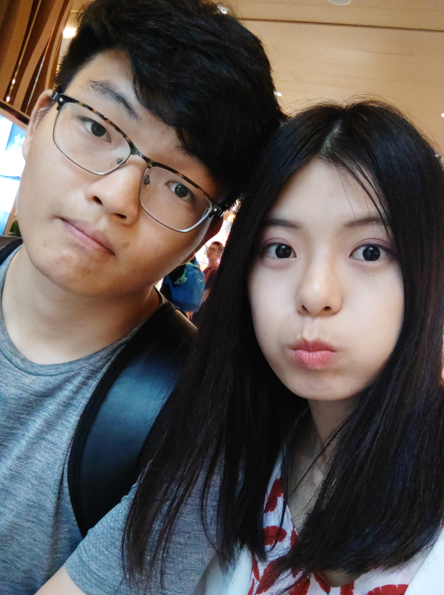

这些天公司比较忙，准备要搞微视春节红包的事情，每天都很晚下班，周末也去公司加了班，很少时间去静下心去想事情。所以断断续续地写。这篇东西写的比较多，希望妹子能看完。
我先表明我的态度吧，我还是坚持我的选择，希望你能继续做我女朋友，希望你能一直陪伴我走下去。
这几天，当我闲下来的时候，我一直在想，一直在想，我在想我做什么才是对的，我选择什么才是正确的，是继续还是放弃。我怎么想，都没有理由去放弃你，反而更加坚定我自己最初的选择。
我为什么坚持到现在，从 11 月 5 号提出分手，到现在，已经有一个多月，为什么我还是在坚持。首先，我不想失去你，最近没有跟你接触，感觉没了另一个世界一样。因为有妹子的陪伴，过的会很舒服。有妹子在，至少我奋斗目标是清楚的。还有偶尔能一起喝喝汤，吃吃泡面饺子啥的。心情很差的时候，抱抱妹子，情绪会缓解很多。
再者，我不想放下你自己孤单一个人，每每想到你自己没人照顾，我就很心疼。每每想到你老是熬夜，身体越来越差，我就很难受（写的像作文一样，妹子不要笑）。希望妹子能够继续听我唠叨，希望妹子能让我好好照顾。最后，责任，妹子为我付出了很多，我也要尽到我作为你老伴的责任，我跟你承诺过的东西我要做到，我会一直陪伴在你身边的，怎么赶都赶不走。
我再跟你说件事吧，关于我自己的，这也是我想了很多天总结出来的东西。
我自己的性格，不知道怎么描述，描述为孤僻？也不是，就是不太主动跟陌生人打招呼的那种，但是熟人的话会玩得很好。应该是交际礼仪上做的不好。从小到大，因为总认为自己家（深圳）里环境不太好意思邀请别人来家做客，别人也很少说来我家做客，就这么得过且过，这样就造成了不太想邀请别人来家里做客的想法。但如果是老家，那还好，我应该会让别人来做客的。所以这么久了，没带你回家跟爸妈一起吃饭，是怕你嫌弃我们住的地方或者开店的地方。然后也没让你跟我爸妈一起在外面吃饭，这都是我自己处理方式的问题，这点我会好好改善的。可能我没跟你说这些事，平时聊这方面的比较少，最后就导致了你对我家人有点小误解。以后有时间就带你回老家见见家长哈。
另外，交际礼仪做的不好的还有，例如我上次从你住的地方出来，没跟你舍友打声招呼。之前在学校的时候，去文鸿哥住的地方吃火锅，吃完后碗就习惯性放桌上，没说主动帮忙什么的。我很少自己一人去别人家做客吃饭，第一次是高中去学校，刚好路上碰到同学，不得不去他家吃顿饭。第二次就是去你姐那，很多初次见面的交际礼仪都做的不好。平时在跟家人去其他亲戚做客时，很多事情爸妈都处理好了，因为自己排最小，所以很多礼仪都没做都没有关注。我妈也说我不懂得这些 “人情世故”，原话是这么说的，意思就是交际沟通方面不太好。我知道这些都是一些小问题，但是聚集起来来看就是个大的个人问题了，这些我会慢慢的改善的。
再详细说说每个月给三千多给家里的事情吧。因为家里最近很长一段时间收入都不好，现在我也工作了，需要给点钱给家里缓解一下经济压力。最初交的金额也是我跟我妈商讨过后得出的结果，我说我要为以后存点钱买房，我妈也表示理解。我爸妈跟我哥最近没东西做了，也不是闲着，我哥在家开始做网店生意。不久过后，等我元旦回老家了，我还要跟家里商讨一下以后是开店铺还是怎么处理。所以我家人并没有就依赖我每个月交的钱的。我交给爸妈的钱在以后开店铺或者买房子起到的是辅助作用，主要出钱的还是在父母那边。以后我工资提升了，我也会根据我跟你小家的情况和我家里的情况等等来决定交多少的。我会跟爸妈沟通好我存钱的目的和用途，爸妈也是明白人，不会那么斤斤计较的。
关于房子的问题。买房分为首付期和房贷期，依我现在来估计，应该需要 4-5 年才能够房子的首付。首付完成后，就是十几年的房贷期。你说要为下一代准备房子，以后孩子才不会继续走跟我们一样的路，可以花更多的精力去发展自己。这点我认可，但是下一代需要房子的时候，我们已经将房贷全部还清了。所以这个真的不是问题。最主要的还是前面的首付期。我知道你认为我每个月给钱给爸妈，可能首付比较难弄，但是我能给你保证，完成首付最晚 5 年，这是我给你的保证。
你会觉得我认为你太物质了、太现实了，你怕这么现实的你破坏如此单纯的我，但我不这么认为，我认为你想的这些东西都是合情合理，都是需要认真斟酌考虑的。一个女生是很需要一个稳定的家庭的。
我希望你不要嫌弃我钱少，我希望你能看到我将来的发展，不要用我现在的状况、处境来决定一些东西。我会一直陪伴你，我也会一直提升自己的价值。希望你能一直陪伴着我共渡难关。我有你的陪伴，我也会尽我自己的责任去给你你想要的。
再说一下家人的事，先说我对你家人吧，我真的没什么偏见的。前些日子你姐问我手机的事时，因为当时工作内容不是很紧急，所以我放下工作，结合了一下百度或者公众号，跟你姐详细地解释了关于买手机的事情，没有当做其他人来看的。之前可能有些事做的不对，到现在我都有一直在慢慢地改善的。
对于我家人对你的印象，是完全没有任何偏见的。爸妈在跟我聊天的时候，对你使用的称呼，不是简简单单的 “你女朋友”，而是一直以大妹子来称呼。给我拿水果或者其他吃的时候，都会说拿一些给大妹子。我家人也很开明，不会对我的另一半要求什么。因为我，导致你认为可能以后融入不了我家人，我会在接下来的日子，慢慢去弥补的，慢慢消除我家人在你心里不好的印象的。
对不起，对不起以前给你带来不愉快的经历，可能在家中排行最小，从小到大都不会去承担一些东西，但是上了大学我都有一直在改变，一直去主动承担很多很多东西，可能现在有的地方做得也不好，但是我都在一直改进的。慢慢塑造自己，将自己变得更优秀。
现在，我已经存了好多好玩的视频、好多好玩的段子想分享给你，我想看到妹子开开心心的对我笑，妹子开心，我也很开心。我这里还有一桶 82年的泡面、香肠等你来品尝呢（虽然是前几天买给自己的，海鲜味的）
我在那天打完电话的第二天早上，分享给你一首歌，一首在我生日第二天凌晨，独自坐在天桥上吃着你亲手做的巧克力蛋糕时，听得我痛苦流涕的一首歌，歌曲表达的情感很强烈。我把它发给你，想表达我非常想你，我需要你的陪伴，“stay with me，cause without you here，i disappear into infinity” “留下来，没有你，我将坠入无尽深渊”。你秒回了，你说 “你咋知道我想你的”，但你撤回了。我该假装不知道还是啥，最后我回了个拥抱。
我还记得很久之前，我推着个单车跟你一起散步，我说我养你，你说“不要，这样 husband 会很辛苦的。”这是你的原话，我记得很清楚。我的目标就是能够做到养你的地步，我要一直努力，供一套房，然后你就不用工作，我负责赚钱养家，你负责貌美如花，在家好好带孩子，好好培养下一代。这是我的目标，我也承诺我会实现的。
所以，妹子，继续做我另一半好不好？
